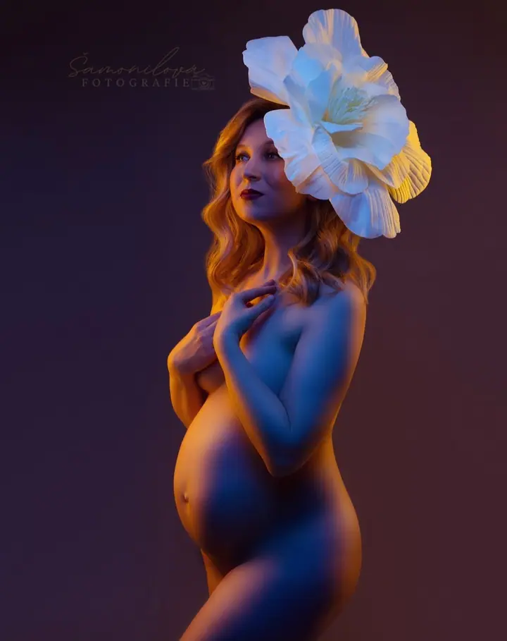
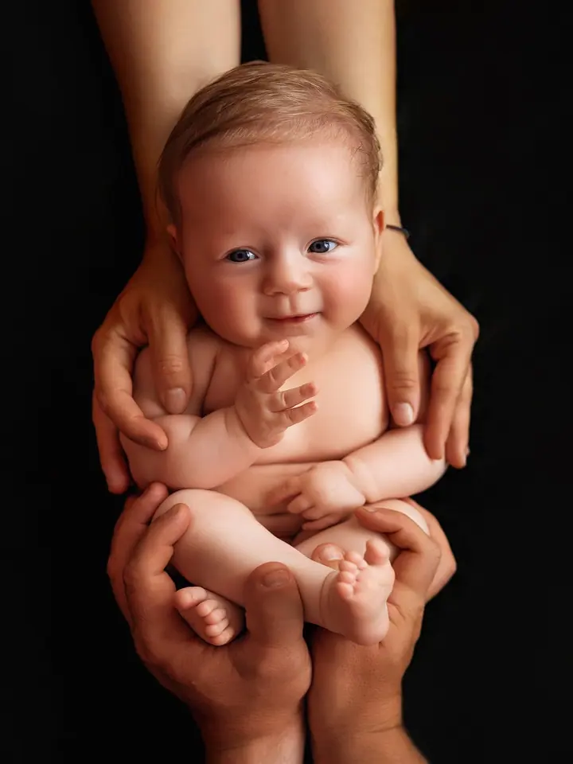
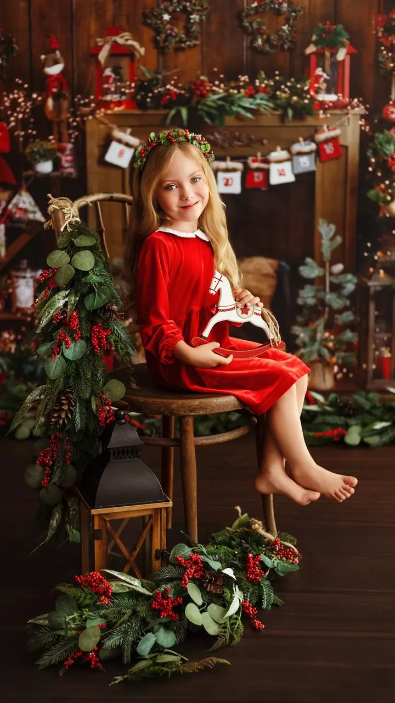

Těhotenské focení
Fotíme v ateliéru, nebo venku v lese, na louce či u řeky. Šaty a rekvizity vám ráda zapůjčím a poradím i s vaším vlastním oblečením.

Jmenuji se Veronika Šamonilová a fotím těhotenská bříška, novorozená miminka i celé rodiny. Můj ateliér najdete v Karviné ve Fryštátu, ale ráda se za vámi vypravím po Mo…
Rezervovat termínJsem fotografka a působím hlavně v Moravskoslezském kraji. Občas se za vámi ale vypravím i napříč republikou nebo do zahraničí. Nejvíc se věnuji těhotenskému focení, newbornu, dětem, rodinám, párům a svatbám.


Ateliér mám v prvním patře na Masarykově náměstí v Karviné-Fryštátu a v okolí Karviné probíhá i většina focení venku. Ráda ale objevuji nová místa, takže místo vždy vybíráme podle stylu, který si přejete, a podle ročního období. Fotíme třeba u Havířova, Frýdku-Místku, Frýdlantu nad Ostravicí nebo v Ostravě.
Na focení vám zapůjčím šaty i rekvizity a ráda poradím s vlastním oblečením. Když budete chtít, zajistím i vizážistku, která se postará o make-up a účes. Fotím také glamour, boudoir, proměny, tematická focení i pro firmy. Pokud máte speciální přání, stačí se ozvat a všechno spolu probereme.
Co fotím
Fotíme v ateliéru, nebo venku v lese, na louce či u řeky. Šaty a rekvizity vám ráda zapůjčím a poradím i s vaším vlastním oblečením.
Miminko fotím do 14 dní od porodu v ateliéru nebo u vás doma. Můžete si vybrat i lifestyle newborn, kdy reportážně zachytím mazlení, krmení a pohodu doma, bez aranžování.
Rodinné focení s malými dětmi od tří měsíců, maminka, tatínek a děti. Pro děti mám připravenou i narozeninovou aranž.
Fotím svatby v Moravskoslezském kraji, napříč republikou i v zahraničí. Místa k focení vybíráme podle stylu a ročního období.
Postup
Ozvěte se mi a společně vybereme styl, místo a termín. Newborn focení je dobré domluvit předběžně už v těhotenství.
Fotíme v ateliéru v Karviné, venku, nebo u miminek i u vás doma. Šaty, rekvizity a případně vizážistku zajistím.
Po uhrazení focení do 7 dnů vám pošlu všechny náhledy a vy si z nich vyberete fotky k úpravě.
Upravené fotografie dostanete přes odkaz na datové úložiště pod svým heslem. K tomu jako malý dárek koláž z vašich fotek.
Otázky
Ideální je období mezi 28. a 34. týdnem těhotenství. Focení trvá zhruba 1 až 2 hodiny.
Samotné focení probíhá do 14 dní od porodu, termín proto domlouváme předběžně už v těhotenství. Počítejte s 2 až 4 hodinami, podle nálady miminka.
Nemusíte. V ateliéru i venku si můžete zapůjčit šaty a rekvizity, a když chcete mít své vlastní, ráda vám s výběrem poradím.
Dodací lhůta je orientačně 4 až 12 týdnů od předání vašeho výběru, většinou bývá kratší. Záleží hlavně na vytíženosti ve svatební sezóně.